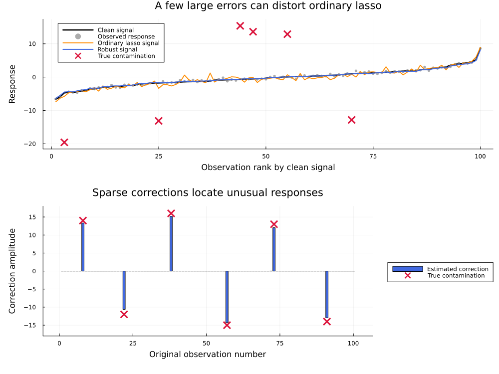

Robust sparse regression
A faulty sensor or a transcription error can produce a few responses far from the regression signal. Squared error gives these observations a large influence: an ordinary lasso can spend its coefficients explaining the errors. Here we give each observation a possible correction and penalize the corrections to keep most at zero. We fit a sparse regression and flag unusual observations in one weighted lasso.

A regression model with occasional contamination
Write the response of observation $i$ as
\[y_i = x_i^\mathsf{T}\beta + o_i + \varepsilon_i.\]
Only a few predictors have nonzero coefficients in $\beta$; only a few observations have nonzero contamination $o_i$. The ordinary noise $\varepsilon_i$ affects all responses. For example, $o_i$ could represent an unusually large recording error. We assume a zero intercept explicitly: neither the responses nor the predictors are centered using this contaminated sample. In practice, estimating an intercept needs care because contamination can distort the sample response mean.
Our estimator minimizes
\[F(\beta,o) = \frac{\|y-X\beta-o\|_2^2}{2n} + \lambda_\beta\|\beta\|_1 + \lambda_o\|o\|_1.\]
The first penalty selects predictors; the second encourages most observations to need no correction. Larger $\lambda_o$ makes corrections more expensive. Letting $\lambda_o$ become very large recovers ordinary lasso, whereas a very small value can assign the signal itself to the corrections. We choose two fixed levels for this illustration; they have not been selected by cross-validation.
using LinearAlgebra, Random, ProximalBase, ProximalSolvers
rng = Xoshiro(407)
n, p = 100, 12
X = randn(rng, n, p)
beta_true = zeros(p)
beta_true[[1, 4, 9]] = [2.0, -1.4, 0.9]
clean_signal = X * beta_true
noise_sd = 0.25
outlier_true = zeros(n)
contaminated = [8, 22, 38, 57, 73, 91]
outlier_true[contaminated] = [14.0, -12.0, 16.0, -15.0, 13.0, -14.0]
y = clean_signal + outlier_true + noise_sd * randn(rng, n)
lambda_beta, lambda_outlier = 0.07, 0.008(0.07, 0.008)Fitting with the existing weighted lasso
Stack the predictor design and an identity matrix horizontally: $A=[X\ I_n]$ and $b=[\beta;o]$. Then $Ab=X\beta+o$. The weights in NormL1(1.0, w) are the penalty levels themselves, so the effective penalty on coefficient $j$ is $w_j$. The loss is divided by $n$ exactly once, and the penalty has no additional division by $n$. These are penalty weights, not observation weights in a weighted least-squares loss.
We use a small dense Float64 design and a dense coefficient vector with cyclic coordinate descent. The ordinary-lasso comparator uses the same $\lambda_\beta$ and the same contaminated observations.
A = hcat(X, Matrix{Float64}(I, n, n))
w = vcat(fill(lambda_beta, p), fill(lambda_outlier, n))
b = zeros(p + n)
solver = CDSolver(order = :cyclic, momentum = false, relative = false,
tol = 1e-12, maxpasses = 50_000)
result = solve!(b, (1 / n) * LeastSquaresLoss(y, A), NormL1(1.0, w), solver)
beta_hat, outlier_hat = b[1:p], b[p+1:end]
beta_ordinary = zeros(p)
ordinary_result = solve!(beta_ordinary, (1 / n) * LeastSquaresLoss(y, X),
NormL1(lambda_beta), solver)
robust_signal = X * beta_hat
ordinary_signal = X * beta_ordinary100-element Vector{Float64}:
-3.044752853825911
2.7679822797912417
-2.6340690466061716
1.2210864613895889
0.09266840985139824
-0.3248309664482143
-0.11192536130063879
-0.08804000590342016
0.686244245900423
4.263329004087836
⋮
-2.2647799800341546
1.6803089256425503
-4.1911704056225325
-0.13773706979256095
-3.7694361897858304
-0.7499865424410882
-4.039166973006201
-1.184870227940553
2.913490192220819Seeing the two explanations of the data
The upper panel orders observations by their known simulated clean signal to make the comparison readable. This order is used for display, not for fitting. The robust curve shows $X\widehat\beta$, without the fitted corrections: it estimates the clean response rather than reproducing a contaminated measurement. The lower panel uses the original observation numbers to compare the corrections to the contamination we planted. The red crosses identify the known contaminated observations; this information is used for evaluation, not passed to the estimator. Plotting commands follow the existing docs-only Literate convention: the plain Julia script and example tests run without loading Plots.
using Plots
display_order = sortperm(clean_signal)
display_rank = invperm(display_order)
signalplot = plot(1:n, clean_signal[display_order]; label="Clean signal", color=:black,
linewidth=2.5, xlabel="Observation rank by clean signal", ylabel="Response",
title="A few large errors can distort ordinary lasso", legend=:topleft,
ylims=(minimum(y) - 2, maximum(y) + 2))
scatter!(signalplot, 1:n, y[display_order]; label="Observed response", color=:gray,
markersize=3, markerstrokewidth=0, alpha=0.65)
plot!(signalplot, 1:n, ordinary_signal[display_order]; label="Ordinary lasso signal",
color=:darkorange, linewidth=1.8)
plot!(signalplot, 1:n, robust_signal[display_order]; label="Robust signal",
color=:royalblue, linewidth=2)
scatter!(signalplot, display_rank[contaminated], y[contaminated]; label="True contamination",
color=:crimson, markershape=:xcross, markersize=7, markerstrokewidth=2)
correctionplot = bar(1:n, outlier_hat; label="Estimated correction", color=:royalblue,
xlabel="Original observation number", ylabel="Correction amplitude",
title="Sparse corrections locate unusual responses", legend=:outerright, ylims=(-18, 18))
scatter!(correctionplot, contaminated, outlier_true[contaminated]; label="True contamination",
color=:crimson, markershape=:xcross, markersize=7, markerstrokewidth=2)
robust_figure = plot(signalplot, correctionplot; layout=(2, 1), size=(1000, 750),
left_margin=5Plots.mm, bottom_margin=5Plots.mm)
savefig(robust_figure, "robust_sparse_regression.svg")
nothingIndependent numerical checks
A solver's converged flag describes its stopping rule. We also compute the objective and the stationarity conditions directly from the original arrays. For a weighted lasso, with $g=A^\mathsf{T}(Ab-y)/n$, coordinate $j$ satisfies $g_j+w_j\operatorname{sign}(b_j)=0$ when nonzero, and $|g_j|\leq w_j$ when zero. The function below returns the largest violation of these conditions. Convexity makes these conditions sufficient for global optimality in exact arithmetic; a small measured violation is a numerical accuracy check, not a statistical guarantee that we have found the true predictors or contaminated observations.
function weighted_kkt(design, response, coefficients, levels)
gradient = design' * (design * coefficients - response) / length(response)
maximum(iszero(coefficients[j]) ? max(abs(gradient[j]) - levels[j], 0.0) :
abs(gradient[j] + levels[j] * sign(coefficients[j]))
for j in eachindex(coefficients))
end
robust_objective = sum(abs2, y - X * beta_hat - outlier_hat) / (2n) +
lambda_beta * sum(abs, beta_hat) + lambda_outlier * sum(abs, outlier_hat)
weighted_objective = sum(abs2, y - A * b) / (2n) + sum(w .* abs.(b))
ordinary_objective = sum(abs2, y - X * beta_ordinary) / (2n) +
lambda_beta * sum(abs, beta_ordinary)
robust_kkt = weighted_kkt(A, y, b, w)
ordinary_kkt = weighted_kkt(X, y, beta_ordinary, fill(lambda_beta, p))
@assert size(A) == (n, p + n) && length(w) == length(b) == p + n
@assert length(beta_hat) == p && length(outlier_hat) == n
@assert result.minimizer === b && ordinary_result.minimizer === beta_ordinary
@assert all(isfinite, b) && all(isfinite, beta_ordinary)
@assert isapprox(A * b, X * beta_hat + outlier_hat; rtol = 1e-12, atol = 1e-12)
@assert isapprox(robust_objective, weighted_objective; rtol = 1e-12, atol = 1e-12)
@assert isapprox(robust_objective, result.minimum; rtol = 1e-10, atol = 1e-12)
@assert isapprox(ordinary_objective, ordinary_result.minimum; rtol = 1e-10, atol = 1e-12)
@assert robust_kkt <= 1e-8 && ordinary_kkt <= 1e-8Why the correction protects the regression
Hold $\beta$ fixed and write $r_i=y_i-x_i^\mathsf{T}\beta$. The minimizing correction is the soft threshold
\[\widehat o_i = \operatorname{sign}(r_i)(|r_i|-\delta)_+, \qquad \delta=n\lambda_o.\]
Thus a residual smaller than $\delta$ receives no correction. For a larger one, the remaining residual is clipped to magnitude $\delta$. Profiling (minimizing) over $o$ yields $n^{-1}\sum_i h_\delta(r_i)+\lambda_\beta\|\beta\|_1$, where $h_\delta(r)=r^2/2$ for $|r|\leq\delta$ and $h_\delta(r)=\delta|r|-\delta^2/2$ otherwise: the Huber loss. Its linear tails reduce the influence of large response errors. No separate Huber solver is needed for this reduction. Here $\delta=0.8$, compared with an ordinary noise standard deviation of 0.25.
We check the soft-threshold formula at the fitted regression and in a scalar control that includes a negative residual, a small residual and the threshold.
delta = n * lambda_outlier
soft_threshold(value, threshold) = sign(value) * max(abs(value) - threshold, 0.0)
profiled_corrections = soft_threshold.(y - X * beta_hat, delta)
@assert isapprox(outlier_hat, profiled_corrections; rtol = 1e-9, atol = 1e-8)
control_residual = [-2delta, delta / 2, delta, 2delta]
@assert soft_threshold.(control_residual, delta) ≈ [-delta, 0.0, 0.0, delta]Interpreting recovery and flags
Since this is simulated data, we can compare coefficients with $\beta$ and fitted clean responses with $X\beta$. Clean-signal RMSE below is an in-sample comparison with the known noiseless response, not a test-set prediction error. A nonzero estimated correction is a candidate flag. We report true positives, false positives and missed contaminations without asserting perfect detection or that one estimator must always win on noisy data.
flagged = findall(!iszero, outlier_hat)
true_positive = length(intersect(flagged, contaminated))
false_positive = length(setdiff(flagged, contaminated))
missed = length(setdiff(contaminated, flagged))
clean_rmse(beta) = norm(X * beta - clean_signal) / sqrt(n)
println("Ordinary lasso: coefficient error = ", norm(beta_ordinary - beta_true),
", clean-signal RMSE = ", clean_rmse(beta_ordinary))
println("Robust fit: coefficient error = ", norm(beta_hat - beta_true),
", clean-signal RMSE = ", clean_rmse(beta_hat))
println("Planted contamination indices: ", contaminated)
println("Flagged indices: ", flagged)
println("True positives = ", true_positive, ", false positives = ", false_positive,
", missed = ", missed)
println("Independent KKT residuals: ordinary = ", ordinary_kkt, ", robust = ", robust_kkt)
println("Independent objectives: ordinary = ", ordinary_objective, ", robust = ", robust_objective)Ordinary lasso: coefficient error = 0.6830967038976027, clean-signal RMSE = 0.6855561276658709
Robust fit: coefficient error = 0.16683883857070472, clean-signal RMSE = 0.16349521177814552
Planted contamination indices: [8, 22, 38, 57, 73, 91]
Flagged indices: [8, 22, 38, 57, 72, 73, 91]
True positives = 6, false positives = 1, missed = 0
Independent KKT residuals: ordinary = 5.814793091474257e-15, robust = 4.3021142204224816e-16
Independent objectives: ordinary = 5.916766967626943, robust = 0.9711306174182259In this seeded example, the robust signal follows the clean signal more closely, and the large estimated corrections occur near the planted errors. One additional uncontaminated observation is flagged: sparsity does not guarantee perfect labels. Corrections are shrunk toward zero, so their magnitudes underestimate large contaminations. The two objectives above belong to different models and should not be compared as a model-selection score.
Limitations and what we learned
Sparsity of the contamination is an assumption, not a conclusion proved by a sparse fit. Nonzero corrections are not definitive outlier labels: a misspecified regression, heavy ordinary noise or a poorly chosen penalty can produce flags. Predictor and correction columns can explain some of the same variation, so the two penalty levels affect how the fit allocates signal and contamination. The method addresses unusual responses; it does not by itself protect against high-leverage errors in the predictors. Predictor scaling also affects the coefficient penalty, and our independent standard-normal columns have comparable scales by construction. Real data need an appropriate, carefully chosen scaling.
Adding $I_n$ costs a dense $n\times(p+n)$ array, appropriate for this small illustration rather than a large-data implementation. See Supported problems and the weighted-lasso tutorial for the supported solver combinations.
We learned how two sparsity assumptions separate a regression signal from a few unusual responses, how this becomes an ordinary weighted lasso, and why checking its objective and KKT conditions is different from checking statistical recovery. To reproduce the figure, run the documentation build with the existing docs environment (julia --project=docs docs/make.jl); standalone execution needs no plotting package.